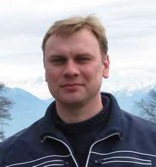

People  Maksim A. Koshelev Maksim A. Koshelev
Maksim Aleksandrovich Koshelev
E-mail: koma@appl.sci-nnov.ru
Tel: +7 (831) 416-48-66
|  |
Maxim A. Koshelev was born in Nizhny Novgorod, Russia in 1980.
Graduated from the Radio Physical Faculty of Nizhny Novgorod State University in 2003 with master's thesis "Precision measurement of the 118-GHz oxygen spectral line parameters".
Since 2000 to the present time with the Laboratory of Microwave Spectroscopy of the Institute of Applied Physics of the Russian Academy of Sciences. Current position - Research Fellow.
Received Ph.D degree in physics from the Institute of Applied Physics of RAS in 2007 with thesis “Precision measurements of molecular line parameters and continuum absorption parameterization in MM/SubMM wave range for atmospheric applications”. |
Major interests are molecular gas spectroscopy, precision measurements of collisional parameters of molecular lines in MM, SubMM and IR wave regions, development of spectroscopic techniques and methods. Particular results are concerned with spectroscopic studies of absorption by atmospheric species (H2O, O2, and some rare ones).
Work experience:
April – October 2004 |
Visiting researcher at University of New Brunswick, Saint John, NB, Canada |
February 2006 |
Lecturing at 41st Research Institute of China Electronics Technology Group Corporation, Qingdao, China |
June – July 2009 |
Joint research visit to The University of Nottingham, Great Britain |
April-May 2011 |
Joint research visit to École Polytechnique Fédérale de Lausanne, Switzerland |
February-June 2012 |
Joint research visit to École Polytechnique Fédérale de Lausanne, Switzerland |
June 2012 |
Invited professor at Laboratoire de Physico-Chimie de l’Atmosphère, Université du Littoral Côte d’Opale, Dunkerque, France |
Selected papers |